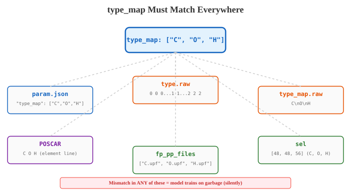

Multi-Element Systems#
I spent three days training a C+O+H model before realizing the type_map was wrong. The model learned that hydrogen was oxygen and oxygen was hydrogen. Three days of GPU time. The loss curve looked normal. The dpgen loop ran without a single error. Every iteration completed. Every stage reported success. The model converged on confidently predicting oxygen behavior for hydrogen atoms and hydrogen behavior for oxygen atoms.
Nothing crashed. Nothing warned me. Not dpgen. Not DeePMD-kit. Not QE.
There is no automatic check that catches a type_map mismatch. None. You catch it yourself, or you discover it three weeks later when your adsorption energies make zero sense and you start questioning your DFT settings, your vdW functional, your pseudopotentials, everything except the one thing that is actually wrong: line 2 of your param.json.
This chapter is about moving from single-element or two-element systems to multi-element systems (C+O+H for graphanol, C+N+H for graphamine). The complexity does not add. It multiplies. And every single failure mode is silent. I cannot stress this enough.
type_map: The One Rule#
Let me start with the simplest multi-element case: water.
Water (2 elements, from our tutorial):
"type_map": ["O", "H"],
"mass_map": [15.999, 1.008]
Two elements. O is type 0, H is type 1. The sel array in the descriptor has two values: [46, 92] meaning up to 46 oxygen neighbors and 92 hydrogen neighbors within rcut. The type.raw file contains a mix of 0s and 1s matching the atom ordering in each frame. This is the pattern.
Now let me put the research-scale configs side by side. Graphene + H₂ (two elements) and graphanol + H₂ (three elements).
Graphene (2 elements):
"type_map": ["C", "H"],
"mass_map": [12.011, 1.008]
Graphanol (3 elements):
"type_map": ["C", "O", "H"],
"mass_map": [12.011, 15.999, 1.008]
Oxygen goes in position 1. Hydrogen moves to position 2. This ordering is arbitrary. You could put them in any sequence. But the moment you choose, that order becomes law. Not a guideline. Not a convention. Not a preference. Law. It propagates to every single file in your entire pipeline, and if one file disagrees, the model silently trains on scrambled data.
Common Mistake
Why not just append oxygen at the end as ["C", "H", "O"]? You could. Conventionally, heavier elements go first. But the real issue is deeper: pick an order and never change it. If you have existing training data from a C+H run and want to add oxygen, you face a choice:
Put O at the end:
["C", "H", "O"]. Existing C+H data stays compatible (types 0 and 1 unchanged).Put O in the middle:
["C", "O", "H"]. You must relabel every existingtype.rawfile to remap H from type 1 to type 2.
Option 1 is easier for backward compatibility. Option 2 is cleaner conceptually. We chose option 2. That meant rewriting every type.raw file from the graphene project. Fun times.
Here is where it gets interesting. This is what type_map = ["C", "O", "H"] propagates to. Every single one of these must be consistent. Miss one and the model silently trains on scrambled data.
File / Field |
Requirement |
|---|---|
|
|
|
|
|
|
|
|
|
0=C, 1=O, 2=H |
|
|
POSCAR / structure files |
Atoms listed in type_map order |
POTCAR (VASP) |
Concatenated in type_map order |
Eight places. At minimum. Miss one, and you get silent corruption. dpgen will not warn you. It will happily train a model on hydrogen-labeled-as-oxygen and produce a converged loss curve. Ask me how I know.
{kind=link}

Fig. 32 The type_map ordering must be consistent across every file in the workflow. A mismatch in any single location (param.json, type.raw, POSCAR, pseudopotentials, sel) means the model trains on scrambled data. dpgen will not warn you.#
type.raw: What the Model Actually Sees#
The model does not know element names. It does not know what carbon is. It does not know what oxygen does. It knows integers. Type 0. Type 1. Type 2. That is the entire vocabulary.
For a graphanol system with 72 C atoms, 24 O atoms, and 24 H atoms (120 atoms total), the type.raw file contains one integer per atom:
0 0 0 0 0 0 0 0 0 0 0 0 0 0 0 0 0 0 0 0 0 0 0 0 0 0 0 0 0 0 0 0 0 0 0 0 0 0 0 0 0 0 0 0 0 0 0 0 0 0 0 0 0 0 0 0 0 0 0 0 0 0 0 0 0 0 0 0 0 0 0 0 1 1 1 1 1 1 1 1 1 1 1 1 1 1 1 1 1 1 1 1 1 1 1 1 2 2 2 2 2 2 2 2 2 2 2 2 2 2 2 2 2 2 2 2 2 2 2 2
Integers
0(positions 0-71): Carbon atoms, mapped totype_map[0] = "C"Integers
1(positions 72-95): Oxygen atoms, mapped totype_map[1] = "O"Integers
2(positions 96-119): Hydrogen atoms, mapped totype_map[2] = "H"
That is all the model has to work with. 0, 1, 2. It does not know that 1 “should” be oxygen. Whatever data you hand it for type 1, that is what type 1 becomes.
Key Insight
If your type.raw says type 1 sits at positions 72-95, but those positions actually contain hydrogen atoms, and your type_map says index 1 is oxygen, the model trains on hydrogen data with the oxygen label. It will learn. The loss will go down. The forces will look plausible in aggregate. The physics will be complete garbage.
If you feed it hydrogen environments labeled as oxygen, it learns a weird hybrid that is neither hydrogen nor oxygen. A fitting network is a universal function approximator. It will find patterns. They will be the wrong patterns.
Run this before every dpgen launch:
$ for d in init_data/set_*/; do
echo "$d: $(cat $d/type.raw | sort -u | tr '\n' ' ')"
done
If any dataset has type indices outside [0, n_elements-1], something is wrong. Fix it now. Not after three days of training.
Here is the scenario that burns people. Pay attention.
You have a C+O+H system with type_map = ["C", "O", "H"]. Every training dataset must use 0 for carbon, 1 for oxygen, 2 for hydrogen. But one dataset is left over from your earlier C+H workflow, where type_map was ["C", "H"], meaning 0=C and 1=H. You feed that dataset into the C+O+H training run without relabeling. The model reads those hydrogen atoms (type 1 in the old scheme) as oxygen (type 1 in the new scheme).
Three days of compute. Gone. Because of a leftover dataset with the old labeling scheme. And the loss curve looked perfectly normal the entire time.
Don’t be me. Relabel before you retrain.
sel for Multi-Element: Different Neighbor Counts#
This is where physics enters the picture. In a two-element system, sel has 2 entries. For three elements, 3. The numbers must reflect the actual neighbor counts in your real structures. Not guesses. Measurements.
Graphene + H2 (C, H):
"sel": [60, 120]
Up to 60 carbon neighbors, 120 hydrogen neighbors within the 6 Angstrom cutoff.
Graphanol + H2 (C, O, H):
"sel": [48, 48, 56]
Up to 48 carbon neighbors, 48 oxygen neighbors, 56 hydrogen neighbors.
You might look at that and think, “Why not just use [60, 60, 120] for graphanol? Keep it generous.” Two reasons. Both matter.
Memory and cost scale with sum(sel). Graphene: 60 + 120 = 180 total neighbors. If you naively use [60, 60, 120] for graphanol: 60 + 60 + 120 = 240. The descriptor matrix grows 33%. Training slows down. GPU memory usage climbs. On a 16 GB GPU with large systems and batch_size=auto, that 33% can push you straight into an out-of-memory crash. Not a subtle degradation. A hard crash on a job you waited 6 hours in queue for.
The physical neighbor counts differ by element. In graphanol, each atom sees roughly equal numbers of C and O neighbors (the material has a C:O ratio near 1:1), but more H neighbors (from both the OH groups and nearby H2 gas molecules). Hydrogen is small and mobile. It shows up everywhere. So 48 C + 48 O + 56 H is tailored to the actual chemistry, not padded for paranoia.
Config Walkthrough
How to determine sel:
Do not guess. Measure neighbor counts from your initial structures:
from ase.neighborlist import neighbor_list
from ase.io import read
atoms = read("sys_configs/sys_bare/POSCAR")
i_idx, j_idx = neighbor_list('ij', atoms, cutoff=6.0)
symbols = atoms.get_chemical_symbols()
for center in range(len(atoms)):
mask = (i_idx == center)
neighbor_syms = [symbols[j] for j in j_idx[mask]]
n_C = neighbor_syms.count('C')
n_O = neighbor_syms.count('O')
n_H = neighbor_syms.count('H')
# Track the maximum of each across all atoms
Take the maximum neighbor count for each element across all your systems (including the densest: high H2 loading, large supercells from gap-filling). Multiply by 1.5 for safety margin. If you run out of sel, DeePMD silently ignores the extra neighbors beyond the limit. No warning. No error. Just missing information that the model needed and did not get. Silent truncation. Silent degradation. Silent frustration when the forces do not converge and you cannot figure out why.
Pseudopotential Ordering (QE): fp_pp_files Must Match type_map#
The second most common source of silent corruption after type.raw mismatches. This one will bite you if you are not careful.
The fp_pp_files list must match the type_map order. Not alphabetical. Not by atomic number. By type_map. Period.
Graphene + H2:
"type_map": ["C", "H"],
"fp_pp_files": [
"C.pbe-n-kjpaw_psl.1.0.0.UPF",
"H.pbe-rrkjus_psl.1.0.0.UPF"
]
Position 0: Carbon pseudopotential. Position 1: Hydrogen pseudopotential. Matches type_map. Good.
Graphanol + H2:
"type_map": ["C", "O", "H"],
"fp_pp_files": [
"C.pbe-n-kjpaw_psl.1.0.0.UPF",
"O.pbe-n-kjpaw_psl.0.1.UPF",
"H.pbe-rrkjus_psl.1.0.0.UPF"
]
Position 0: Carbon. Position 1: Oxygen. Position 2: Hydrogen. Matches type_map. Clean.
Common Mistake
If you accidentally write:
"type_map": ["C", "O", "H"],
"fp_pp_files": [
"C.pbe-n-kjpaw_psl.1.0.0.UPF",
"H.pbe-rrkjus_psl.1.0.0.UPF",
"O.pbe-n-kjpaw_psl.0.1.UPF"
]
dpgen uses the hydrogen pseudopotential for oxygen atoms and the oxygen pseudopotential for hydrogen atoms. QE runs. It might even converge. (SCF does not know your physics. It just solves the Kohn-Sham equations for whatever nuclear charges and pseudopotentials you gave it.) The energies and forces will be wrong. The model trains on wrong energies and wrong forces. Nothing crashes. Nothing warns you. You discover it weeks later, or never.
For VASP users: the POTCAR must be concatenated in type_map order. Same rule. Same consequences.
POSCAR / sys_configs: Element Order in Structure Files#
The POSCAR element order must match type_map. Here is a graphanol + H2 header:
Graphanol + 4H2
1.0
12.780000 0.000000 0.000000
-6.390000 11.067569 0.000000
0.000000 0.000000 25.000000
C O H
72 24 32
Direct
0.0833 0.0833 0.4000 ! C atom (type 0)
0.1667 0.0833 0.4000 ! C atom (type 0)
...
0.0833 0.0833 0.4500 ! O atom (type 1)
...
0.0833 0.0833 0.4800 ! H atom (type 2)
...
The species line reads C O H with counts 72 24 32. Carbon first, oxygen second, hydrogen third. Matching type_map = ["C", "O", "H"].
Now imagine you wrote C H O on the species line with counts 72 32 24. Swapped H and O. Let me trace through what happens. dpgen reads the first 72 atoms as C. Correct. The next 32 as type 1 (which it thinks is O based on the type_map). But physically those 32 atoms are hydrogen. The last 24 as type 2 (which it thinks is H). They are actually oxygen. You just fed the model hydrogen environments labeled as oxygen and oxygen environments labeled as hydrogen.
The model trains. The loss goes down. The dpgen loop runs. Three days later you are staring at adsorption energies that are physically impossible and wondering if your vdW functional is broken.
It is not the functional. It is line 6 of the POSCAR. I am serious.
Config Walkthrough
Quick verification for POSCAR files:
$ for f in sys_configs/*/POSCAR; do
echo "=== $f ==="
head -8 "$f"
echo ""
done
The element line (line 6) must match your type_map. The count line (line 7) must match the number of each element. Cross-reference with the actual atom positions. This takes 30 seconds. A type_map mismatch takes 3 days to discover and 3 more to re-run. 30 seconds vs. 6 days. Do the math.
The Complete Graphanol Config: What Changed From Graphene#
Alright, enough about what can go wrong. Let me show you what a correct multi-element config actually looks like. This is the real graphanol param.json, and I will walk through every difference from the graphene version.
Training Parameters#
Config Walkthrough
Descriptor:
"descriptor": {
"type": "se_e2_a",
"rcut": 6.0,
"rcut_smth": 2.0,
"sel": [48, 48, 56],
"neuron": [25, 50, 100],
"axis_neuron": 16,
"resnet_dt": false
}
The only change from the graphene config: sel went from [60, 120] to [48, 48, 56]. The embedding network (neuron, axis_neuron) stays identical. The complexity of the local chemical environment in graphanol is similar to graphene + H2, just with one more element type to track.
Fitting network: [240, 240, 240], unchanged. The fitting net does not depend on the number of elements directly. It receives the descriptor output, which already encodes element-type information. Internally, DeePMD-kit creates one fitting network per element type, but they share the same architecture.
Loss function:
"loss": {
"start_pref_e": 0.02,
"limit_pref_e": 2.0,
"start_pref_f": 1000,
"limit_pref_f": 1.0,
"start_pref_v": 0.02,
"limit_pref_v": 0.1
}
Virial prefactors are now non-zero. Here is why. Graphanol has OH groups that create internal stress when H2 adsorbs, and the model needs to capture that stress-strain coupling. For pure graphene (a 2D slab with a vacuum gap), the stress tensor from QE is not physically meaningful in the z-direction, so we kept pref_v = 0. Graphanol’s OH groups make the virial physically meaningful again.
System Configurations and Initial Data#
Graphanol has 9 sys_configs systems (vs graphene’s 5). The OH groups create distinct adsorption sites that need separate exploration. Initial data grew to 20 init_data_sys datasets (vs graphene’s 16), including graphanol-specific structures like set_76atoms (72 C + 4 O). More elements means more compositions to cover. More compositions means more initial data. There is no shortcut here. If you try to shortcut it, you pay in wasted iterations.
Key Insight
When going from C+H to C+O+H, you must have initial training data that includes oxygen-containing structures. You cannot bootstrap a three-element model from two-element data alone. The model has never seen oxygen. It does not know what oxygen does. It does not know what an O-H bond looks like. It does not know that oxygen is electronegative.
Generate initial C+O+H data from short AIMD runs on the graphanol structure. Even 50-100 frames of the bare graphanol slab at 300 K gives the model a starting point. Without this, the first few dpgen iterations will be chaos. The model will predict random forces for any atom near oxygen, the exploration will be useless, and you will waste several iterations before the training set accumulates enough oxygen data to become useful. I’ve seen this go wrong too many times.
The Failure Mode Nobody Warns You About#
Let me be very specific about what the corruption looks like, because understanding the mechanism is the only way to guard against it.
type_map = ["C", "O", "H"]. But your POSCAR lists atoms as C, H, O (hydrogen before oxygen). Let’s trace through this.
dpgen reads the first 72 atoms as type 0 (C). Correct. The next 24 as type 1. It thinks oxygen, because type_map says index 1 is O. But they are actually hydrogen. The last 24 as type 2. It thinks hydrogen. They are actually oxygen.
The model trains. The loss drops because the fitting network is a universal function approximator. It finds correlations. They are the wrong correlations. The descriptor for “type 1” is built from hydrogen atomic environments, but the model associates type 1 with the oxygen fitting network. Forces might look reasonable in aggregate because the network is flexible enough to partially compensate. But adsorption energies are wrong. Diffusion barriers are wrong. Every property that depends on getting O and H right is contaminated.
And the really infuriating part: the model might even pass basic validation. RDFs can look plausible. Stability tests can pass. The corruption shows up only when you compare against careful DFT benchmarks for specific oxygen-sensitive properties. By then, you have weeks of production data that is quietly wrong.
That is the trap.
Common Mistake
dpgen will not warn you about swapped element types. DeePMD-kit will not warn you. QE will not warn you. The loss function will not warn you. The only thing that warns you is careful manual verification before you press submit.
This is not hypothetical. I have seen it happen on two separate projects. Both times, the error was discovered only after production simulations produced results that matched no published literature. Both times, the root cause was a type_map / POSCAR mismatch. Both times, the fix was starting over from scratch.
Verification Checklist#
Before launching dpgen on a multi-element system, go through this. Every item. No shortcuts. No “I’m pretty sure it’s right.” Verify.
$ grep '"type_map"' param.json
$ for d in init_data/set_*/; do
echo "$d: types=$(cat $d/type.raw | sort -u | tr '\n' ' ') count=$(wc -w < $d/type.raw)"
done
$ grep -A5 '"fp_pp_files"' param.json
$ for f in sys_configs/*/POSCAR; do
echo "=== $f ==="; sed -n '6,7p' "$f"
done
$ grep '"sel"' param.json
$ grep '"mass_map"' param.json
Six commands. Two minutes. That is the price of not wasting three days.
Key Insight
This checklist takes 2 minutes. A type_map mismatch takes 3 days to discover and 3 more days to re-run. I know people who have been burned by this twice. On the second time, they wrote a shell script that runs the checklist automatically before every dpgen run. Automate the thing that burns you twice. Not optional. Not a suggestion.
Takeaway#
Adding an element to your dpgen workflow is not adding a line to a list. It is a propagation problem. type_map order must be consistent across param.json, training data type.raw, pseudopotentials fp_pp_files, structure files POSCAR, and the descriptor sel. Eight places minimum. One mismatch, and the model silently learns the wrong chemistry. For three days. While the loss curve looks perfectly healthy.
If you are extending a C+H workflow to C+O+H: relabel all type.raw files, generate fresh initial data with the new element, update every field in param.json, run the verification checklist, and start dpgen from scratch. Do not try to continue a previous run. Different sel means a different descriptor size means incompatible model architecture.
Check the type_map. Check it again. Then check it one more time. Then write a script that checks it for you.